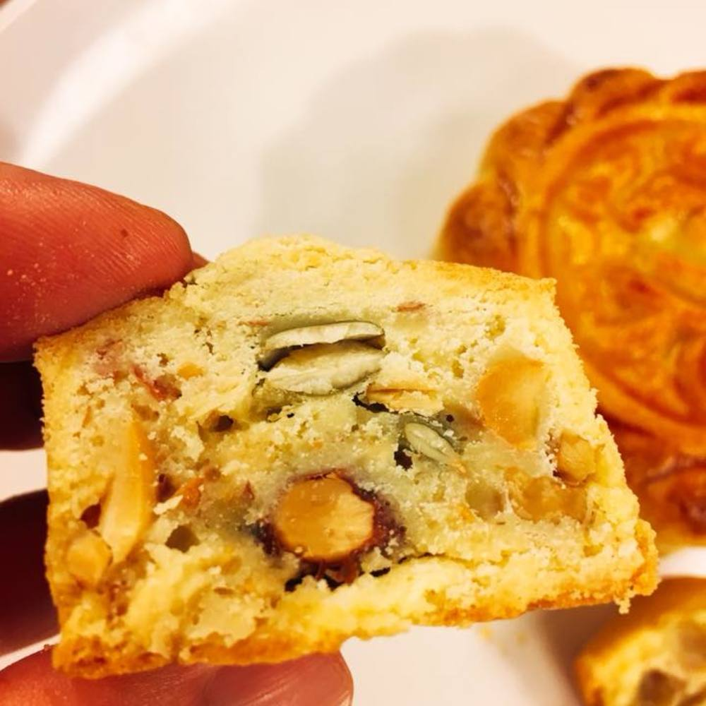
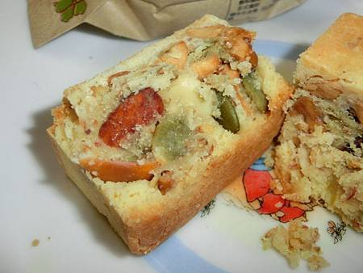

1.由來 長得像是鳳梨酥的小小方形酥餅，殊不知是當初糕餅師傅廖顯順無心之下製作的五仁月餅縮小版， 當時，廖顯順只是因為一般鄉下人家裡沒有多少人有冰箱，所以製作了不加冬瓜餡和板油等（容易壞掉）的版本， 用鳳梨酥的模子和酥皮，包入滿滿的乾果，在單純只加堅果的情況下，鄉卿父老們在處存這些糕餅時就容易許多，並且在那時還有了點名氣。  2.二崙佳美 原本坐落在雲林鄉的小小鄉下糕餅店，它的成立全源自廖顯順那時的辛酸過往． 廖顯順在三十年前也使跟著全民運動一般的去投資股票，股票從一千多點起漲， 跑到當時嘉義才有的永利證券跟土地銀行開戶，每天戴著耳機聽著股市的起伏， 接著，郭婉容事件觸發了，股票一個也賣不出去，賠光了家當還外加一屁股債，為了剛出生的孩子， 廖顯順就在股海中如夢醒了般，踏實回到本業，把自己最後剩下的，「做五仁酥的好手藝」，努力的在困境中把孩子拉拔大。 因為烘培業畢竟工作繁瑣且費工，所以知曉這番苦的廖顯順原本希望孩子長大就去當個白領就好， 但是雷曼兄弟引發的金融風暴卻像是三十年前的郭婉容事件事件那樣把人帶回那個老本業， 第二代就這樣被金融海嘯捲回了老家，那時的金融風暴讓拿著銀行理專金飯碗的長媳莊淑敏甚至連在快生時和在產檯時都要接電話， 丈夫廖嘉育看不下去，回到老家和老父親說要做麵包和糕餅，任性的長子不做廣告業務跑回家，這讓父親十分擔心， 廖顯順那段時間連覺都睡不好，心想：好好工作不做跑來做麵包，那何必當初還辛辛苦苦考大學呢？這糕餅店是否養得起一家三代也是個問號， 但老父親也不忍心趕走回來的孩子，長子也承諾廖顯順要傳承他的五仁酥，但是光靠門市是有限的， 廖嘉育把原本做西點的弟弟和弟媳一起帶上，趁著雷曼兄弟金融風暴帶起的宅經濟， 廖家從社群網站下手建立了網站、做網購等，在網路上做起了一番生意後廖嘉育才鬆口氣， 安心地在家含飴弄孫。 當初的郭婉容事件、金融風暴還有隨手製作的五仁酥串起了廖家的三代情。  3.特色和種類 內餡精選七種果仁不同的特點，花生的醇厚，核桃的細滑，杏仁果的香脆， 腰果的甘甜，南瓜子的清香，白瓜子的味純，再加上芝麻的深層香氣。 佳美伍仁酥和早期的伍仁月餅最大的不同是內餡沒有豬肉、豬油和冬瓜餡 因為早期的鄉間生活大家都沒有冰箱放了，豬肉的月餅就容易腐壞。 採用將堅果和奶油炒乾的方式，可以自然的延長保存期限，純天然的風味，符合現代健康飲食的風潮。 伍仁月餅和伍仁酥的差異在於餅皮的製法不同，伍仁月餅的餅皮口感更硬、更脆一些。 而伍仁月餅在這裡反而變的稀奇，只在中秋期間製作。
來源(1)